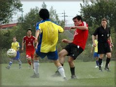

|
Misato, Sun 22nd Oct. The British Embassy maintained its perfect start to the season, beating a tough Wall Street Clash side with a battling performance and two unanswered second half goals. In Indian summer heat and the dust of the Misato riverbank, goals from Steve "Crouchie" Lidbury and debutant Alex Babulall were enough to bag the three points and keep BEFC on track for TML Division One.
The first half was close-run, with BEFC maybe shading it. Steve missed the Embassy's best chance of the opening 40 minutes, glancing his header wide after Simon Collier had fed in a cross from Masao Fujita's clever pass. But Wall Street had their chances too, with the best falling to Sid Lloyd who vollied over from close range.
In the second half the Embassy's passing game began to tell, with Masao Fujita's tireless and skillful running causing problems and drawing fouls all over the park, and Will playing his usual role as the Irish Makalele. The Steve-Alex pairing up front was starting to gell and their growing understanding provided the first goal, with Lidbury bursting through the left channel and crossing for his new strike partner to head into the empty net.
 Not long after the second, decisive, goal arrived thanks to the Embassy's superior understanding of the current interpretation of the offside rule. The ball was played forward with Alex standing in an offside position, and the Clash, unsure whether they should stay or they should go, opted for the former and raised their arms in appeal. As Alex smartly stood still, Steve ran past the static defenders and rifled the ball into the corner of the net.
There was still time for the David Beckham of Daikanyama, Sid Lloyd, to curl an exquisite free kick over the Embassy's wall only to be denied by a fine fingertip save from Keith Crowley; for captain Tim Letheren to tickle the ball past the post when stood five yards out from an open goal; and for Steve to blast a last-minute penalty against the post.
Not the prettiest BEFC performance of all time, but a good comitted one that saw us past one of the better teams in this division. Winning when you're not at your best - the mark of champions, possibly.
BEFC Man of the Match: Masao Fujita
Report by Simon Collier
|